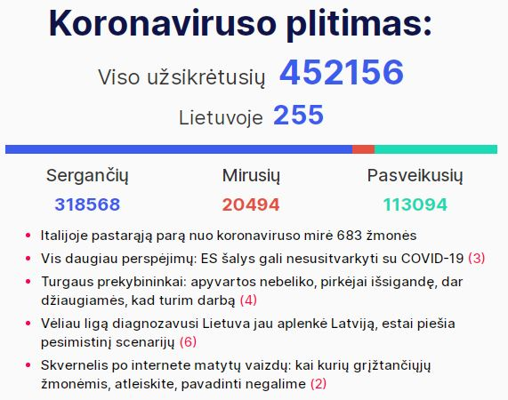
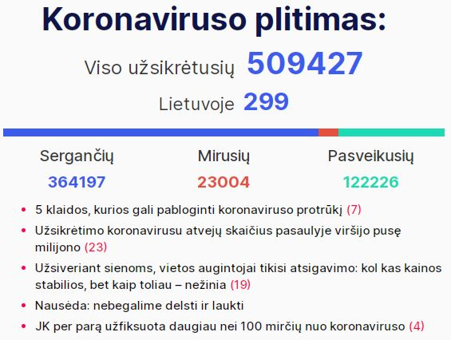
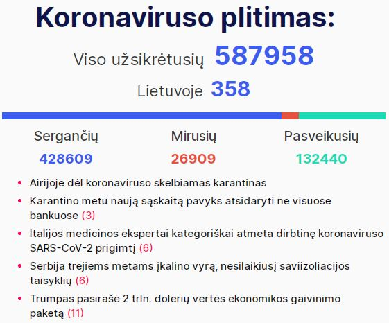
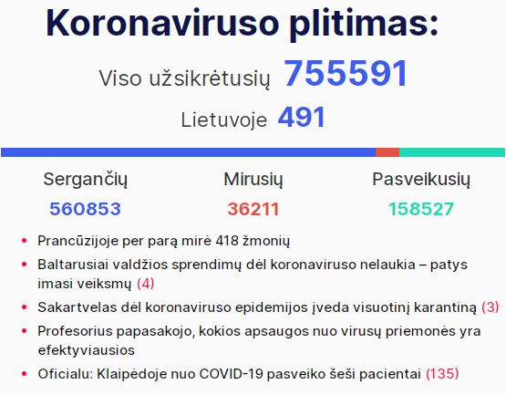
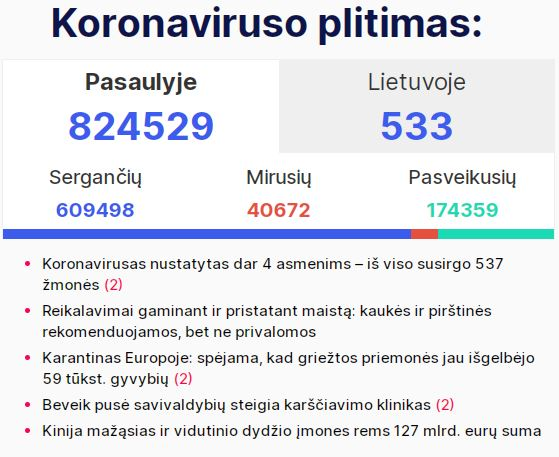
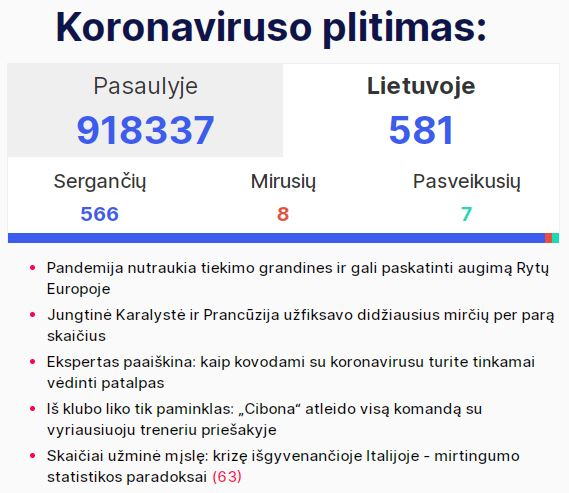
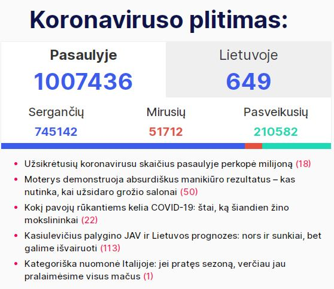
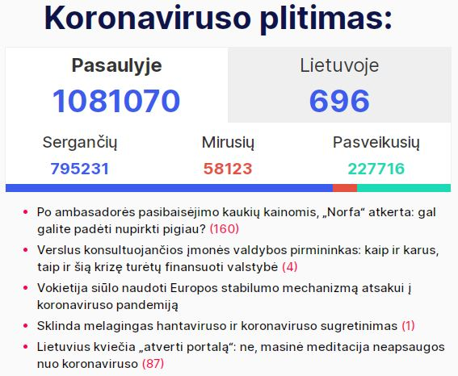

Imuosi įvykių fiksavimo dėl poros priežasčių. Pirmoji - laikas atnaujinti web puslapių kūrimo kuklias
žinias. Antroji - karantino trukmė realiai neapibrėžta. Kritiniu atveju gali būti ne 14 ir ne 30 dienų.
Ir smalsu užfiksuoti eigą bei pokyčius. Dievas duos, neteks rašyti - "226 diena. Maisto atsargų seniai
nebeliko. Prieš 3 dienas suvalgėme paskutinį katiną. Vakar teko šūviais ginti tolyn nuo namų
nepažįstamus asmenis, turinčius aiškiai negerų ketinimų. Bijau, kad naktį gali jie sugrįžti.. :"😜
Pokštas nelabai vykęs. Bet. Dar prieš 10 dienų niekas neprognozavo šios savaitės įvykių - faktiškai
uždarytos Europos, su masiškais apribojimais. Taip kad važiuojam.
1 Diena
Kovo 16. Pirmadienis
Pirma diena. Visi - aš, žmona, dukra, 3 katės ir šuo - namuose. Pasivaikščioti neiname. Žmona nuvažiuoja
parduotuvėn. Žmonių kaip įprastai. Prekių lentynose netrūksta. Namų šaldytuvas užpildomas pilnai. Pilnas
racionas - be pokyčių ar suvaržymų.
Diena praeina įveikinėjant misiją po misijos "Command & Conquer 3. Tiberium Wars. Kane Edition".
Apstu šmaikščių žinučių nuo draugų apie virusą ir apsaugas nuo jo.
Žiniasklaidoje atmosfera saikingai kaista. Sienas uždaro Kanada. Vakarop apie tokį pat ketinimą nuo kovo
18d. - Rusija. Pradeda aiškėti, kad Lietuva turi labai ribotą kiekį rinkinių, būtinų testuoti galimai
užsikrėtusius koronavirusu. Nenormali padėtis Lietuvos-Lenkijos pasienyje. Sunkvežimių eilė vakare
viršija
30km: Lenkija prieš įsileisdama nuodugniai tikrina vairuotojus. Kita karšta zona Vokietijos-Lenkijos
pasienyje. Susikaupė šimtai automobilių, norinčių grįžti tranzitu per Lenkiją Lietuvon. Lenkai
neįsileidžia.
Premjeras ir prezidentas bando derėtis. Žada su konvojumi leisti (tik) autobusus ir mikroautobus.
Išvakarėse
praimas gyrėsi suderėtu 36 val. humanitariu koridoriumi. Sakė netiesą.
Vakare - jau tradicinis kinoseansas. Šį kartą Guy Ritchie 'Aladin'. Geresnis, nei tikėjaus.
Dienos santrauka LaisvėsTV kanale:
Dienos naujienos iš medikų fronto linijos laidoje "TIEK ŽINIŲ: kalba daktaras":
2 Diena
Kovo 17. Antradienis
Antra diena. Nujausdamas, kad karantinas šalies mastu gali užtrukti, ir norėdamas fiksuoti atskiras
gyvenimo
detales, pradedu šį tinklaraštį. Paskutinį mėnesį gilinaus tik į JAVA programavimo kalbą. Laikas
prisiminti,
kaip naudojami html, css.
Žmona darbe - t.y. prie savo darbo stalo namuose. Dukra liūdi prie savo kompo. Norėjo susitikti su
draugu. Atkalbėjome.
Žiniasklaidoje žinia apie pirmąjį sunkų atvejį Lietuvoje. Panevėžyje reanimacijoje - iš PAR grįžęs
verslininkas. Medžiojo?
Pradeda darbą papildomas koronaviruso patikros punktas Klaipėdoje.

Diena praeina programuojant šį puslapį, bei kovojant su virtualiais blogiečiais "Sniper Ghost Warrior
Contracts".
Dienos santrauka LaisvėsTV kanale:
Dienos naujienos iš medikų fronto linijos laidoje "TIEK ŽINIŲ: kalba daktaras":
3 Diena
Kovo 18. Trečiadienis
Trečia diena. Anksti ryte - apie 4:30 - katė prašos laukan. Tenka lipti iš lovos. Keliuosi apie 10 val.
Pusryčiams - grūdėta varškė su džemu, kiaušininė su lašinukais, kava su BelVita sausainiu.
Po pusryčių einu pasivaikščioti. Pora kilometrų iki sutvarkyto miesto tvenkinio, pora kilometrų atgal.
Oras neblogas. Plius 14. Gal vėjas kiek slopina pavasarišką šilumą.
Pakeliui prasilenkiu su tuzinu tokių pat vaikštinėtojų. Vaikšto kas po vieną, kas dviese. Pojūčio, kad
miestelis tuščias nėra - šiame Prienų krašte ir eiliniu metu judėjimas minimalus. Didžiuma juda
automobiliais. Šių taip pat nėra daug.
Grįžtu. Internetu susimoku visas einamas sąskaitas - mobilus ryšys, paslaugos teikiamos namuose bei
Kauno ir Alytaus butuose. Dirbu prie tinklapio. Nusprendžiu, kad tinkama būtų pridėti kasdieninę Laisvės
TV dienos apžvalgą iš youtube kanalo, bei specializuotą to pat kanalo laidą "TIEK ŽINIŲ: kalba daktaras"
Šmaikščios žinutės nuo draugų apie gyvenimą karantino metu nesiliauja.
Žiniasklaidoje bene visas (bent jau pradinis) turinys - apie pandemiją. Lietuvoje - jau 33 atvejai.
Fiksuojamas pirmasis atvejis, kuomet pacientas užsikrėtęs vietoje.
Dalis lietuvių iš Vokietijos keltu, traukiniu, kariniu lėktuvu, organizuotu konvojumi sugrįžo namo.
Vilkikų vairuotojams papildomai atidaromas sienos kirtimo postas ties Lazdijais. Geriau nei nieko, bet
eilė pasienyje vis dar milžiniška.
Pasaulyje per parą virusas pareikalavavo per 700 gyvybių. Vis dar liūdnai pirmauja Italija. 475 mirtys
per 1 dieną.

Skambina pusseserė iš Čikagos. Situacija panaši į Lietuvos. Kas gali, sėdi, dirba namuose. Barai,
restoranai uždaryti. Mokymo procesas organizuotas nuotoliniu būdu. Įprastų kamščių keliuose nebėra.
Jungtinėse Valstijose jau 125 mirtini atvejai.
Vakarop vietoje paskiro filmo seanso imuosi serialo "I Am Not Okay with This". Serijos trumpos, po 20
minučių, tad visas 1 sezonas įveikiamas per vakarą.
Dienos santrauka LaisvėsTV kanale:
Dienos naujienos iš medikų fronto linijos laidoje "TIEK ŽINIŲ: kalba daktaras":
4 Diena
Kovo 19. Ketvirtadienis
Ketvirta diena. Katinai nesudrumsčia nakties miego. Pabundu prieš devynias, bet dar valandą vartaus su
telefonu
rankose - facebook, instagram, naujienos žinių portaluose. Viskas kaip įprasta. Pusryčiams - grūdėta
varškė su džemu, avižinių dribsnių košė su bananais ir džiovintais abrikosais, kava, imbieriniai
sausainiai.
Po pusryčių - vėl pasivaikščiojimas. Šiandin pora laipsnių vėsiau nei vakar, bet be vėjo. Didinu
vakarykštį atstumą puskilometriu. Vaikštinėtojų gal keletu
mažiau nei vakar. Ties tvenkiniu aikštelėje ir parke suskaičiavau tik 4. Visi skyriumi. Sveikatos
ministras svarsto, kad piliečių teisė kvėpuoti grynu oru parkuose ir pasivaikščiojimo takais turi būti
ribojama. Gal tai paskutinis pasivaikščiojimas.
Humoru, kartais ne visai padoriu su bičiuliais dalintis nesustojame. Visos temos apie karantiną ir
pandemiją.
Žiniasklaidoje pozityvo vis dar nedaug. Valdžios vyrai džiaugias, kad Lietuva labai gerai tvarkosi su
situacija. Oponentai kritikuoja, kad nežymus Europos mastais užfiksuotų viruso paplitimo atvejų kiekis
yra dėl elementarios priežasties - nustatymo testų atliekama nusikalstamai mažai. Tikrosios padėties
nežino niekas.
Iš geresnių žinių - vilkikų eilės prie Lenkijos sienos išnyko. Papildomo posto ties Lazdijais atidarymas
padėjo.
Pasaulyje vėl apie 800 gyventojų dėl koronaviruso sukeltų komplikacijų iškeliavo anapilin. Užkrato
plitimo tempai nemažėja. Italijoje dar 427 naujos mirtys. Bendru mirčių kiekiu (3405) šalis aplenkė
Kiniją (3245).

Rinkose pinga nafta, o Rusijoje toliau sminga rublis. Steam platformoje sulaukiu nuolaidos ir skubu
įsigyti "Red Dead Redemption 2". Kultinis žaidimas laukinių vakarų tematika. Karantinas dėka tokių
pramogų neprailgs.
Vakaro seanse - (žiūrovų pageidavimu - žmona primygo) indų filmas "Taare Zameen Par", kas išvertus
reikštų "Žemės žvaigždutės". Po peržiūros galiu įvertinti - geras, rekomenduoju.
Dienos santrauka LaisvėsTV kanale:
Dienos naujienos iš medikų fronto linijos laidoje "TIEK ŽINIŲ: kalba daktaras":
5 Diena
Kovo 20. Penktadienis
Penkta diena. Viskas kaip paprastai. Pabundu prieš 9, pusryčiauju apie 10. Racionas įprastas.
Po pusryčių laukiu kol atsikels dukra - planuojame pasivaikščioti visi kartu.
Vaikštinėti renkamės ne Prienus, bet Druskų mišką, kuris plyti kitoje nei Birštonas Nemuno pusėje.
Formaliai, čia taip pat Birštonas. Net miško takai vadinami gatvėmis ir turi pavadinimus.
Kol nepaskelbė griežto ribojimo eiti iš namų, skubame pabūti gryname ore. Sutinkame keletą kitų
vaikštinėtojų. Oras neblogas. Vis dar vėsu, bet nėra šalta. Savaitgalį sinoptikai žada 0-5 Celsijaus
laipsnių ir galimą šlapdribą. Teks sėdėti "ant pečiaus".
Lietuvoje jau 49 patvirtinti viruso nešiotojai. Žiniasklaidoje valdžios prisipažinimas - testavimui
reikalingos priemonės baigėsi. Sveikatos reikalų ministeris kalba apie pauzę (!?). Prieš porą dienų
gyrės kaip gerai Lietuva tvarkos, kaip mažai pas mus užsikrėtusių. Kol neatveš naujų priemonių
užsikrėtusių skaičius iš vis neaugs. Galėsime toliau pasidžiaugti pirmavimu. Profesionalai, bl...
Iš geresnių žinių - gauta siunta iš Kinijos. Apsauginės kaukės ir vienkartinės pirštinės. Šis tas yra
geriau nei nieko. Medikai iš visų gydymo įstaigų paskutiniu metu vienas per kitą skundėsi visa ko stoka.
Dar 1300 mirčių pasaulyje per parą. Daug. Kinija pamažu grįžta prie normalaus būvio, o Europa ir Amerika
karštligiškai ieško būdų suvaldyti situaciją. Rusija panaši į Lietuvą (arba atvirkščiai) - tiria nedaug,
randa nedaug. Skirtingai nei pas mus, kur katalikų bažnyčia perėjo prie nuotolinių pamaldų (per TV)
modelio, bei vestuvių ir krikštynų atšaukimo, ten kovodami su virusu stačiatikių popai rengia kryžiaus
nešimo žygius. Be abejo dalyvaujant tūkstančiams tikinčiųjų. Panašius reportažus mačiau ir iš Ukrainos.
Pravovierai, odnako.

Vakaro seanse - naujas serialas "Dark".
Dienos naujienos iš medikų fronto linijos laidoje "TIEK ŽINIŲ: kalba daktaras":
6 Diena
Kovo 21. Šeštadienis
Šešta diena. Nedarbo diena. Nors man tokia pat kaip ir visos kitos.
Pirmoji užfiksuota mirtis nuo koronaviruso Lietuvoje. Daug neaiškių detalių ir nemalonių prielaidų -
kalbama, kad užsikrėtė.. ligoninėje.
Nei praimas, nei sveikatos ministeris viešumoje nepasirodo. Aukštas ir gražus iš Daukanto aikštės vėl
veblena apie būtinybę vienytis. Apie būtinybę keisti krizės valdytojus nekalba.
Viso atėjus vakarui Lietuvoje fiksuojami 99 infekcijos atvejai. Būtų ir daugiau - testavimui reikalingų
priemonių nebeliko. Kitą savaitę žada gauti. Manau, skaičius bus su papildomu nuliu. Ir bus dar gerai
jei tik toks.
Italai toliau miršta. 793 fatališki atvejai per parą. Ispanijoje - 285 mirtys. 112 - Prancūzijoje, 56 -
Jungtinėje Karalystėje, po 30 Belgijoje ir Nyderlanduose, 23 - Šveicarijoje. Jungtinėse Valstijose - 32.
Ir t.t., ir pan.
Dieną praleidžiu prie kompiuterio. Oras buvo neblogas. Saulėta. Bet.. patingėjau.
Daug žinučių su juokeliais. Tai reiškia, kad kokie liūdni bebūtų skaičiai, žmonės nepraranda humoro
jausmo. Kita vertus, tos mirtys vis dar kur tai toli.

7 Diena
Kovo 22. Sekmadienis
Septinta diena.
Trumpai. Diena namuose. Pasivaikčioti neiname. Giedra ir vėsu. Temperatūra apie nulį. Norisi šilumos.
Statistika. Italijoje - 651 mirtys per praėjusią parą. Pasaulio mastu (diena dar nesibaigė) - per 1500.
Lietuvoje naujų mirčių nėra, o viruso nešiotojų užfiksuota 129. Praimas praneša apie laukiamus 5000
testavimo rinkinių "jau rytoj" ir žada pradėt gausų testavimą (~1000 / dieną) nedelsiant. Matysim.

8 Diena
Kovo 23. Pirmadienis
Aštunta diena.
Trumpai. Diena namuose. Pasivaikčioti neiname. Giedra ir vėsu. Temperatūra apie nulį. Norisi šilumos.
Statistika. Italijoje - 601 mirtys per praėjusią parą. Pasaulio mastu (diena dar nesibaigė) - per 1700.
Lietuvoje naujų mirčių nėra, o viruso nešiotojų užfiksuota 160. Jungtinėse valstijose - 9400 naujų
atvejų ir 111 mirčių.

Dienos santrauka LaisvėsTV kanale:
Dienos naujienos iš medikų fronto linijos laidoje "TIEK ŽINIŲ: kalba daktaras":
9 Diena
Kovo 24. Antradienis
Devinta diena.
Šaldytuvas kiek pratuštėjo, bet poreikio keliauti parduotuvėn dar nėra. Pasivaikščioti
neiname. Lauke vis dar giedra ir vis dar šalta. Dieną teįšilo iki poros laipsnių. Laikas pavasariui.
Saulėlė jau nugalėjusi tamsą - diena ilgesnė už naktį.
Lietuvos valdžia bejėgiškai skeryčiojas su savais sprendimais. Efekto mažai, triukšmo daug. Panašu, kad
tuoj uždraus išeiti iš namų. Žadėtas gausus testavimas vis dar nepradėtas. Iš užsienio pargrįžtančius
nuo šiandien ėmė karantinuoti priverstinai. Tam nepritaikytuose hostel tipo viešbučiuose - po 5-6 žmones
kambaryje. Apsaugos priemonės nenumatytos. Kiek efektyvūs panašūs veiksmai, paaiškėjo jau gabenant
žmones iš aerouosto - sukišo it silkes visus į ankštą autobusą. Jei kas buvo sveikas, tai esant viruso
nešiotojui, turės puikią galimybę susirgti.
Registruotų atvejų Lietuvoje - 209. Užfiksuota antroji mirtis - 90-ies senolė pralaimėjo kovą.
Pasaulio statistika. Italai nenusileidžia liūdnoje statistikoje - 743 aukos per parą. Planetoje - per
2100. Antrąją vietą užima Ispanija - neteko 497 piliečių. Jungtinėse valstijos lyderiauja testuodami (ir
atrasdami naujai užsikrėtusius) - 9249 nauji atvejai ir 132 naujos mirtys. 240 fatališkų atvejų per
dieną Prancūzijoje.

Dienos santrauka LaisvėsTV kanale:
Dienos naujienos iš medikų fronto linijos laidoje "TIEK ŽINIŲ: kalba daktaras":
10 Diena
Kovo 25. Trečiadienis
Dešimta diena.
Racionas išlieka neribojamas. Atsargų dar yra, tačiau neprognozuojami valdžios sprendimai verčia
susimąstyti, ar neverta rimčiau užsiprekinti, kol dar neįvedė totalaus draudimo išeiti iš namų ir pačių
parduotuvių pridarymo (ar pirkėjų skaičių ribojimo). Sumąstyta - padaryta. Važiuojam su dukra į Alytaus
Promo cash&carry. Prieš ketvirtį amžiaus mano paties įkurtas įmonės Sanitex padalinys. Šiandien tai
naujas ir erdvus didmeninės prekybos centras. Didelis asortimentas, plačios erdvės ir ribotas pirkėjų
kiekis (įleidžiami tik turintys kliento kortelę). Užsiprekiname porai savaičių. Pirmą kartą viešumoje
naudojam veido kaukes, vienkartines pirštines, prekybos centre naudojame dezinfekuojantį rankų skystį.
Papildomai aplankom butą Dzūkijos sostinėje. Patikrinu paštą, pasiimu keletą rūbų.
Savitarnos bokse nusiplaunu automobilį - ketinau pavasarį varyti į plovyklą kapitaliniam švarinimui, bet
panašu, kad šios paslaugos teks palaukti. O mašiniukas pernelyg purvinas, kad lauktų.
Lietuvos valdžia paskelbia apie karantino pratęsimą iki balandžio 13. Manau, kad ir vėliau dar pratęs.
Analizuojantys kitų, su virusu susidūrusių šalių, patirtį sako, kad pikas Lietuvoje bus gegužės
pradžioje. Pranešama apie naujas mirtis - viso 4 atvejai. Vienas jų - gan žinomas verslininkas iš
Panevėžio. Tas pats anksčiau minėtas "medžiotojas" parvykęs iš Pietų Afrikos Respublikos. 65-erių buvo.
Kiti mirusieji - vyresni.
Tarp išvakarėse karantinuotų asmenų viename Vilniaus viešbutyje kilo muštynės. Panaudotas peilis. Yra
sužeistų. Praimas nekuriuos grįžusius įvardija "nelabai žmonėmis".
Pasaulio statistika. Italai toliau pirmauja: vėl šimtai aukų - 683. Ispanija vejasi - 656. Jungtinėse
valstijose kasdieninis skaičius auga - 142. Prancūzija - 231. Pasaulio mastu - 2266. Per dieną. Kaip 10
nemažų keleivinių lėktuvų. Liūdni skaičiai.

Po keletos dienų pertraukos vakare šeimyninis kinoseansas. Q.Tarantino "Once Upon Time in Holywood".
Dienos santrauka LaisvėsTV kanale:
Dienos naujienos iš medikų fronto linijos laidoje "TIEK ŽINIŲ: kalba daktaras":
11 Diena
Kovo 26. Ketvirtadienis
Vienuolikta diena.
Atšilo oras. Vakar, šiandien iki +12. Laikosi giedra. Tiek dieną, tiek naktį. Po pusryčių
pasivaikščiojimas Druskų miške. 4,5 km ir nei vieno žmogaus. Karantinuojas visi. Birštono promenada -
takas kitoje nuo miško pusėje palei Nemuną - tuščias. Nieko stebėtino - visi SPA uždaryti.
Iš 4 mirusių Lietuvoje nuo infekcijos 3 žmonės iš Ukmergės. Kadangi spėjama, kad užkratas išplito
ligoninėje, visi medikai karantinuoti. Gydymo įstaiga - neveiksni. Valdžia svarsto ar nevertėtų uždaryti
pačią Ukmergę (apriboti įvažiavimą/išvažiavimą). Tokie štai "laimėjimai".
Skelbiama, kad Lietuvą galų gale pradės pasiekinėti masiškai įvairiais kanalais užpirktos apsaugos
priemonės - respiratoriai, pirštinės, kombinezonai, kita. Gal pasibaigs tas neatsakingas medikų
nesaugojimas visoje šalyje.
Dienos statistika. Lietuvoje jau 299 atvejai. Per paskesnią parą niekas nemirė. Italai vėl "pasižymėjo"
- 712 mirčių. 498 - Ispanijoje. 365 - Prancūzijoje. 136 - Jungtinėse valstijose. 115 - Jungtinėje
Karalystėje. Pasaulio mąstu - dar 2357 išėję anapilin.

Dienos santrauka LaisvėsTV kanale:
Dienos naujienos iš medikų fronto linijos laidoje "TIEK ŽINIŲ: kalba daktaras":
12 Diena
Kovo 27. Penktadienis
Dvylikta diena.
Oras pavasariškas. Tačiau šiandien pasivaikščioti neinu. Penktadienio tingulys? Diena praeina kaip ir
daugelis kitų - internetas, žaidimai, serialai.
Lietuvoje tuo tarpu - 5 mirtis bei 358 patvirtinti užkrėtimo atvejai. Ir praimo nuostaba sužinojus, kad
Kauno klinikose Infekciniame skyriuje vadovybė gydytojus verčia pakartotinai naudoti vienkartinius
rūbus. Kaip čia taip? Juk pasak sveikatos ministerio - visko gana. Taip ir gyvename. Valdžia mato
vienaip, gydytojai vietose kitaip, eiliniai gyventojai trečiaip. Visčiukus - kas teisus ir gerai dirbo -
skaičiuosime rudenį per seimo rinkimus.
Italai sumušė savo liūdną rekordą - 919 mirčių. Ispanai - savąjį, 575 netektys. 299 pridėjo Prancūzai,
400 - Jungtinės valstijos, 181 - Jungtinė Karalystė. Šios praimui diagnozuotas virusas. Pasaulis
nestabdo, giltinė šienauja toliau - 2906 mirtys per dieną.

Dienos naujienos iš medikų fronto linijos laidoje "TIEK ŽINIŲ: kalba daktaras":
15 Diena
Kovo 30. Pirmadienis
Penkiolikta diena.
Praėjo savaitgalis. Su kontrastinga orų permaina. Šeštadienį džiugino plius 17 šiluma, antroje
sekmadienio pusėje temperatūra nukrito iki nulio, o lauke siautė pūga. Šiandien rytą sniego paklotas vis
dar gulėjo. Iki pietų. Persukome laikrodžius. Saulėlydis nuo šiol valanda vėliau.
Ir man, ir dukrai prasidėjo nuotolinis mokymas. Paskaitos, bendravimas su dėstytojais - online
platformose. Visoje Lietuvoje vienu prisijungė visos mokyklos ir kitos mokymo įstaigos. Nebuvo netikėta,
kad nemažai daliai ryšys užlūžo. Mums viskas pavyko sklandžiai.
Lietuvoje - jau 7 mirtys. Bendras apsikrėtusiųjų kiekis pirmadienio vakarui - 491. Bent perpus mažiau,
nei prognozavau prieš savaitę, kuomet buvo 99 ir mintijau apie papildomą nulį prie pastarojo skaičiaus.
Gal ir gerai. Testavimo mastai ženkliai padidėjo, nors sveikatos ministras šiandien pripažino -
tiriančių laboratorijų pajėgumai ant ribos.
Užsienyje vis dar reikalai prasti. Italai miršta: trijų dienų skaičiai - 889, 756, 812. Miršta ir
ispanai - 682, 820, 537. Miršta prancūzai - 319, 292, 418, amerikiečiai - 515, 363, 558,
britai - 260, 209, 180. Pikas vis dar kažkur ateityje. Duos Dievas netolimoje. Šiandien užsidarė Rusija.
Griežtas karantinas Maskvoje. Ten jau 1836 užsikrėtusių ir 9 mirtys. Prieš savaitę dar šaipės iš vakarų.
Žiūrint į skaičius prisimeni vieno tirono frazę: "viena mirtis - tragedija, šimtai ir tūkstančiai -
statistika". Ir nepaprieštarausi.
Vakar praktiškai vienu prisėdimu įveiktas italų serialas "The Young Pope". Rekomenduotinas peržiūrai.
Šiandien imamės tęsinio kiek kitu pavadinimu - "The New Pope".

Dienos santrauka LaisvėsTV kanale:
Dienos naujienos iš medikų fronto linijos laidoje "TIEK ŽINIŲ: kalba daktaras":
16 Diena
Kovo 31. Antradienis
Šešiolikta diena.
Antra nuotolinio mokymosi diena. Nauja disciplina - PHP programavimo kalba. Paskaitos nuo 9 val. ryto,
tad norint papusryčiauti tenka keltis anksčiau, nei pastarosiomis dienomis įpratome.
Lauke vis dar vėsa. Saulėta, bet dieną teįšyla iki +5.
Žmona suvažinėja Vilkaviškin ir atgal apipirkti mamos su patėviu.
Lietuvoje - jau 8 mirtys. Bendrai apsikrėtusiųjų - 533. Nespėjama tirti visų pagal metodiką numatytųjų.
Tame skaičiuje ir mirusiųjų. Artimieji dienomis laukia norėdami atsiimti kūnus. Siurealizmas kažkoks.
Seimas neeilinėje sesijoje svarsto bausmių griežtinimą už karantino pažeidimus. Vyriausybė norėtų
reguliuoti svarbiausių prekių kainas. Tame tarpe būtinųjų apsaugos priemonių. Opozicija prieštarauja:
"jau gyvenome šalyje, kur kainos buvo reguliuojamos. Ten elementariai nebuvo prekių".
Bendroje kakafonijoje vis suskamba balsai, oponuojančių visuotiniam karantinui - "nužudysite ekonomiką
ir
bėdų bus nepalyginamai daugiau".
Užsienyje šimtais mirštama ir toliau. 912 - niūrus rekordas Jungtinėse Valstijose. 837- Italijoje, 748 -
Ispanijoje, 499 - Prancūzijoje, 381 -
Jungtinėje Karalystėje, . Nedrąsūs kritikai reiškia nuomonę - visi mirė nuo
eilės chroniškų ligų, koronavirusas tik priedas, bendras mirtingumas pasaulyje nėra išaugęs. Gal ir yra
racijos. Gal ir ne.
Indijoje policija nesilaikančius karantino talžo gatvėse lazdomis. Ištuštėjusioje Maskvoje valdžia
baugina bausmėmis. Žada visus susekti pagal vaizdo kamerų įrašus. Be kita ko, ten totali dauguma
piliečių skuba heitinti visus, mėginančius išeiti iš
namų (į darbą, parduotuvėn ar kitur). Vietinės realijos.
Vakarop atliekame namų darbus ir tęsiame serialo "The New Pope" peržiūrą.

Dienos santrauka LaisvėsTV kanale:
Dienos naujienos iš medikų fronto linijos laidoje "TIEK ŽINIŲ: kalba daktaras":
17 Diena
Balandžio 1. Trečiadienis
Septyniolikta diena.
Trečia diena nuotolinių mokslų. Internetas nestringa. Judam į priekį.
Sulaukėm balandžio. Oras vis dar toks pats kaip ir.. visą laiką nuo lapkričio. T.y. lengvai virš nulio.
Gerai, kad saulėta. Nors ne ištisai. Ir kad sinoptikai vėl žada šilumos pliūpsnį.
Lietuvoje - seimūnų apsižodžiavimai dėl medikų finansinių skatinimo priemonių. Tikriau - dėl noro
užsidėti kepurę "mes ir tiktai mes rūpinamės, o kiti visi blogi". Aukštas ir gražus prezidentas bando
rūstauti "man nesvarbu, kas kaltas", bet atsižvelgiant į pastarųjų savaičių paties neveiksnumą
(neįgalumą?), galėtų nieko nekalbėti, nes tik tampa panašus į tokį pat besivaikantį reitingų.
Naujai užregistruotų mirusių šiandien nėra. Bendras užfiksuotų atvejų skaičius - 581. Paskelbta, kad 7
asmenys pasveiko. Medicinos funkcionieriai skelbia apie pilną apsirūpinimą visa kuo reikalingu -
"lėktuvai leidžias kasdien", medikų bendruomenė neigia šias kalbas ir tebeprašo pagalbos.
Balandžio 1-ios pokštų mažai kaip niekad. Ne tas laikas. Nors privatūs juokeliai ir žinutės gyvos.
Vakarais per TV juokias bei juokina Haroldo "Dviračio žinios".
Pasaulis kovoja toliau. Bendras mirčių nuo koronoviruso sukeltų komplikacijų kiekis pasiekė 47 192.
Aplenktamos Italiją, Ispaniją į lyderius kasdieniniu mirčių skaičiumi išsiveržė Jungtinės Valstijos.
Bendras ten mirusiųjų skaičius 5 102 - jau aplenkė epidemiją pirmuosius sutikusius Kiniją ir Iraną
(atitinkamai 3 312 ir 3 036). Bendroje įskaitoje pirmauja Italija - 13 155 mirtys ir Ispanija - 9 387.
Jungtinių Tautų generalinis sekretorius kalba apie pandemiją kaip didžiausią grėsmę žmonijai nuo antrojo
pasaulinio karo. Nieko smagaus.
Virusas virusu, bet vakarop serialo "The New Pope" peržiūra savo eile.

Dienos santrauka LaisvėsTV kanale:
Dienos naujienos iš medikų fronto linijos laidoje "TIEK ŽINIŲ: kalba daktaras":
18 Diena
Balandžio 2. Ketvirtadienis
Aštuoniolikta diena.
Seminaras. Kursai. Paskaitos. Kiekvienam namų gyventojui savos tobulėjimo pamokos. Susirandame atskirą
kampą ir netrukdydami vienas kitam dalyvaujame mokymo procese. Nesimoko tik 3 kačiai ir kalaitė Gilė.
Nors kas žino - gal pas juos savos gyvenimo pamokos. Bet vargu bau - didžiumą laiko dalį visi 4 tiesiog
snūduriuoju kas kur.
Šilti orai už lango kažkur ne mūsų platumose. Balandis balandžiu, bet pavasaris dar miega. Gal po dienos
kitos kas keisis. Lauksim.
Lietuvoje sergamumas įsibėgėja. Turim 649 atvejus. Tame skaičiuoje - 100 medikų. Tas nėra gerai. Šitie,
tam, kad dauguma išgyventų, turi sirgti paskutiniai. Bet kadangi didžiuma jų viskuo (apsaugos
priemonėmis) aprūpinti tik sveikatos ministro kalbose, tai situacija nestebina. Mirė 9 asmenys. Iš jų 6
Ukmergėje. Pikti budulių liežuviai interneto platybėse siūlo miestą "užarti". Tokių pačių, kurie
nešiodami virusą pirmi linkę šlaistytis ir pramogauti.
Pasaulyje ir toliau nieko džiugaus. Italija nedrąsiai ima svarstyti "gal jau pikas pasiektas..?". Bet
pabaiga bendrame kontekste dar toli. Viso planetoje virusas prisidėjo prie 53 167 mirčių. Tai - plius
6000 per dieną. Ir tai beveik 2 kartus daugiau nei viso mirčių užfiksavo Kinija (per visą kovos su
užkratu laikotarpį).
Jungtinės Valstijos masiškai testuoja visus ir per paskesnę dieną suranda 29 874 naujus viruso
nešiotojus. 968 amerikiečiams, palytėtiems "koronės", tai paskutinė gyvenimo diena. Dienos mirčių apimtimi lyderiu tampa
Prancūzija - nutrūko 1 355 gyvenimai. Ispanai arti tūkstančio - 961. Italai "tik" ketvirtoje - 760.
Mirties lenktynės tęsiasi.
Mokslų dienos sesijoms namuose pasibaigus užbaigiama serialo "The New Pope" peržiūra. O vakare dar
įveikiama mistinė drama "Apostle".

Dienos santrauka LaisvėsTV kanale:
Dienos naujienos iš medikų fronto linijos laidoje "TIEK ŽINIŲ: kalba daktaras":
19 Diena
Balandžio 3. Penktadienis
Devyniolikta diena.
Rytas prasideda nuo saugos tarnybos skambučio - informuoja, kad objekte (suprask, pas mus namuose) dingo elektra. Patikinam, kad esame patys, kad saugūs ir vėl užsnūstame. 9 ryto elektros tiekėjas atsiunčia pranešimą - gedimas pašalintas. Keliuos pora valandų vėliau nei įprastai, tad nepatogumų buityje nepatiriu.
Diena praktiškai laisva nuo mokslų. Dukrai viena paskaita, man viena prezentacija apie e-komercijos technologijų naudojimą, žmona apsieina be seminaro ir dalį dienos drybso lovoje.
Maisto racionas pilnavertis. Parduotuvės dirba, nors šiaip ten poreikio lankytis nėra - didelis apsipirkimas buvo praeitą savaitę ir vis dar visko pakanka.
Oras permainingas. Popietėje bando šildyti saulė, už keliolikos minučių barškina į palangę kruša, dar po minutės kitos vėl saulė. Retkarčiais pašėlsta vėjas.
Registruoti užkrato plitimo mastai Lietuvoje šią savaitę sudarė 40-50 naujų atvejų kasdien. Pasitinkant savaitgalį - viso skelbiama apie 696 užsikrėtusiuosius. 5 atvejai - gimtojoje Prienų savivaldybėje. Mirčių vis dar 9. Kiek yra neregistruotų galima tik spėlioti. Bet reziumuojant trijų savaičių laikotarpį, dramatiško sprogimo, kitaip - Itališko varianto, gal ir nebus. Pikas prognozuojamas balandžio antroje pusėje. Kai kurie nedrąsiai prasitaria apie karantino suvaržymų naikinimą gegužės viduryje. Jei taip, gal ekonomika ir išgyvens. Bet kuriuo atveju labiausiai džiaugtųsi 20-etį pasitiksianti dukra.
Pasaulinė statistika:
Viso mirčių - 58 137.
Jungtinės Valstijos viso neteko 6 803 ir 733 per paskiausią parą. Italija (atitinkamai) - 14 681 ir 766, Prancūzija - 6 507 ir 1 120, Ispanija - 10 935 ir 587, Jungtinė Karalystė - 3 605 ir 684.
Kinija, viruso paplitimo židinys, pagal bendrą fatališkų atvejų kiekį nepatenka į pirmąjį penketuką. Autoritarizmas laimi prieš demokratiją? Ar viso labo geriau slepia galus į vandenį? Galbūt kada nors tai sužinosime.
Vakaro kinoseanse biografinė drama "Just Mercy".

Dienos naujienos iš medikų fronto linijos laidoje "TIEK ŽINIŲ: kalba daktaras":